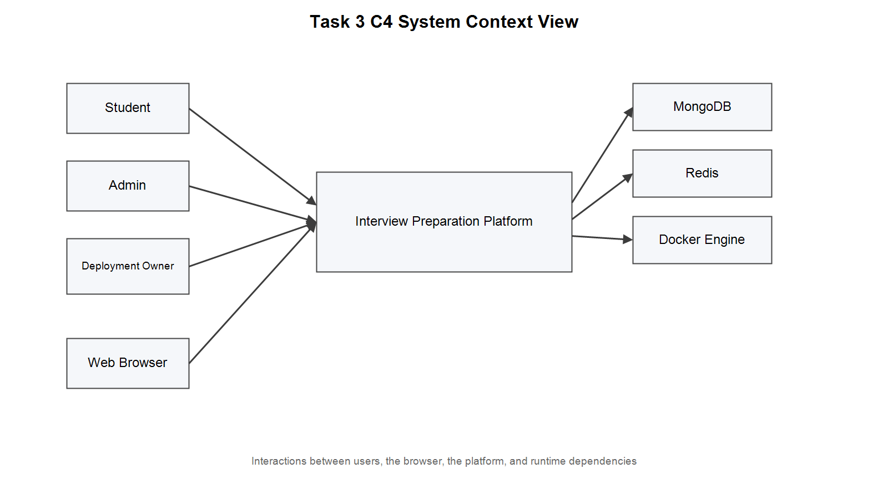
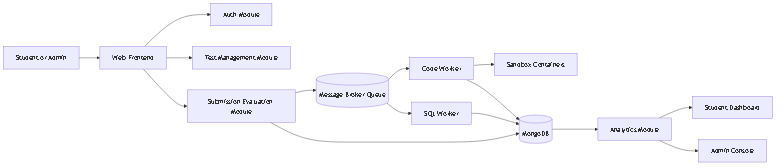
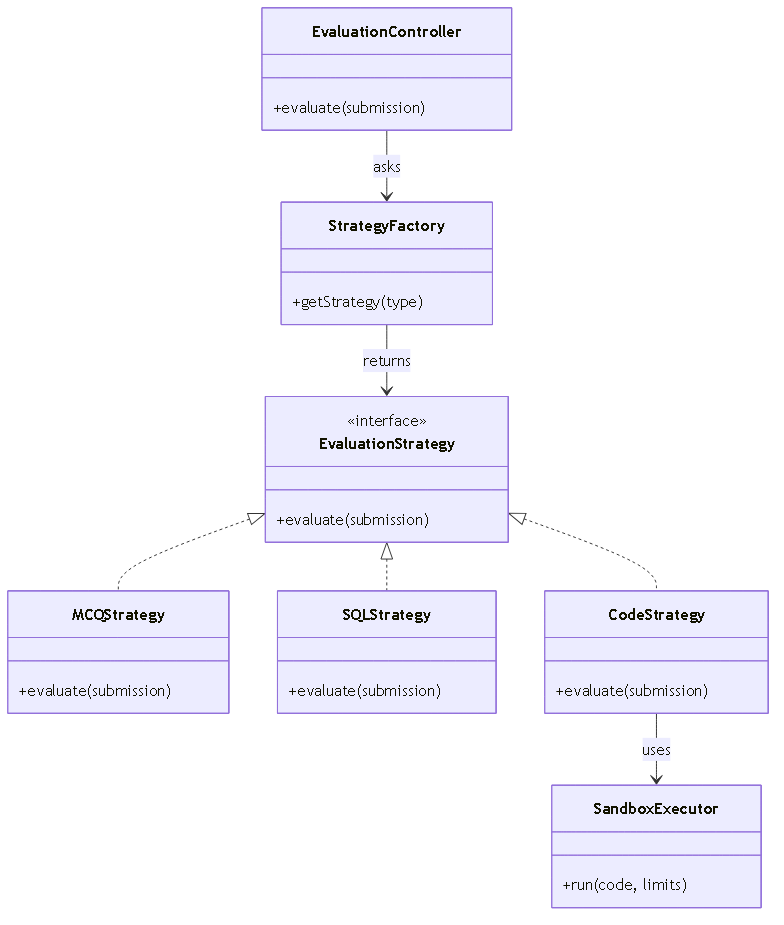
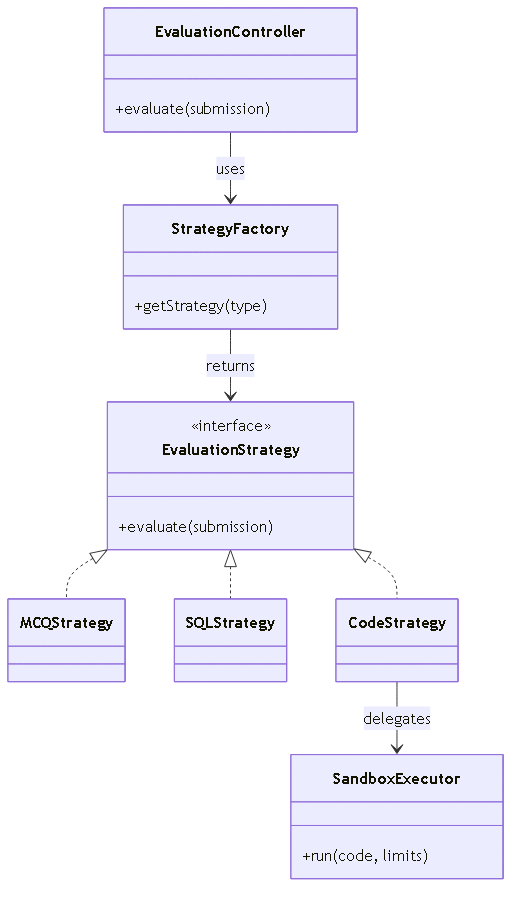

JWT auth flow (signup/signin/verify) · Global auth middleware · Role guard · Admin user management API · User model · Users integration test
Docker sandbox runner · Async evaluation pipeline · BullMQ queue/worker · Evaluation strategies (Code, MCQ, SQL) · Dead-letter routing · Idempotency test
Question bank CRUD API · Topic caching · Timed test session lifecycle · Anti-cheat violation tracking · Test builder & live test frontend
Submission read service with cache-aside · Student/admin analytics aggregations · Monitor dashboard · Runtime metrics · Worker telemetry · Cache warm-up
React app structure · Auth/student/admin UI panels · Login/signup/profile pages · Vite build config · Docker Compose · README & architecture analysis doc
| ID | Requirement | Architectural Significance |
|---|---|---|
| FR-1 | Students & admins register, log in, verify tokens, manage profiles | Drives auth, profile management, role-aware protected access |
| FR-2 | Protected routes require valid JWT; admin-only routes reject student access | Drives global access control and role-based authorisation |
| FR-3 | Admins can create, edit, deactivate and permanently delete questions | Drives question bank CRUD, role protection and content lifecycle |
| FR-4 | Question bank supports Code, MCQ, and SQL question types | Drives flexible storage and evaluation logic for mixed types |
| FR-5 | Students start timed tests filtered by topic, type, difficulty, count, duration | Drives test-session generation and server-side timing control |
| FR-6 | Test creation prefers unseen questions; allows controlled repetition when pool is limited | Drives question-selection policy and test continuity |
| FR-7 | Students can run sample test cases for code questions during a timed session | Drives secure sample-run support in the test flow |
| FR-8 | Timed tests record anti-cheat violations; auto-submit on 2nd violation | Drives exam integrity enforcement and violation tracking |
| FR-9 | Final submission stores answers, evaluates them, returns a result summary | Drives async evaluation pipeline, persistence, and result reporting |
| FR-10 | Submission APIs support idempotency keys and queue status tracking | Drives duplicate-prevention and async processing visibility |
| FR-11 | Admins can manage users and students with safety checks | Drives admin-only user management and safety safeguards |
| FR-12 | Students can view performance history and weak areas | Drives analytics aggregation and read-side reporting |
| ID | Requirement | Metric / Target | Tactic / Evidence |
|---|---|---|---|
NFR-1 |
Performance — results within 5 s | p95 API ≤ 500 ms · eval ≤ 10 s | Async queue + cache-aside reads |
NFR-2 |
Scalability — services scale independently | Worker concurrency = 2 (configurable) | Stateless JWT · queue-decoupled workers |
NFR-3 |
Security — sandboxed execution & authenticated access | 1 CPU · 256 MB · no network · 10 s timeout | Docker sandbox + global JWT middleware |
NFR-4 |
Availability — 99.5% uptime target | /health/ready returns 503 if dep. unhealthy | Health probes · worker heartbeat · retries |
NFR-6 |
Maintainability — modular codebase | 9 strict internal modules | Modular monolith · Strategy + Factory patterns |
NFR-7 |
Observability — structured logs & telemetry | 5-min latency & worker snapshots | Monitor dashboard · runtimeMetrics · logs |
NFR-8 |
Freshness — reads reflect recent writes quickly | Submissions 8 s TTL · topics 60 s TTL | Cache invalidation on every write path |
Modular monolith backend with a React frontend and a separate BullMQ worker for heavy evaluation.
React frontend with role-aware flows. Student pages: login, test builder, live test, submissions, analytics, profile. Admin pages: question management, user management, monitoring.
Auth module handles registration, login, token verification, and profile access. Users module provides admin-only student account management with safety guards (no self-delete, seed-admin protection).
Questions module manages Code, MCQ, SQL CRUD. Tests module handles timed session creation, server-side timer, question delivery, sample runs, anti-cheat violations, and final submission.
Submissions module accepts requests and enqueues them (202). Evaluation module consumes BullMQ jobs, selects strategy (Code/MCQ/SQL), executes in isolated Docker containers, writes results back.
Analytics: student summaries and admin overviews via MongoDB aggregations. Monitor: exposes BullMQ queue state, worker heartbeat, API latency metrics, and readiness probes.
MongoDB for persistent domain data. In-memory caches (submissions list 8 s, topics 60 s, summaries 15 s, max 2000 entries LRU) improve read speed. Startup warm-up pre-populates 8 most-active student caches.
| Stakeholder | Key Concerns |
|---|---|
| Students | Simple test flow · fair anti-cheat · fast feedback · clear results |
| Administrators | Reliable CRUD · role protection · monitoring visibility · data correctness |
| Developers | Modular boundaries · testability · clear APIs · low setup friction |
| Deployment Owner | Secure code exec · controlled infra cost · health visibility · recoverability |
Stakeholders: Developers, Admins · Concern: Maintainability, feature evolution
Stakeholders: Students, Developers · Concern: Performance, responsiveness
Stakeholders: Deployment Owner, Developers · Concern: Setup simplicity, isolation
Stakeholders: Students, Admins, Deployment Owner · Concern: Unauthorized access, safe exec
Stakeholders: Developers, Admins · Concern: Incident detection, debugging speed
Decision: Run code in short-lived Docker containers with 1 CPU · 256 MB · no network · 10 s timeout.
Trade-off: Strong isolation vs. container startup overhead per evaluation.
Decision: Save job as QUEUED, enqueue to BullMQ, return 202 in <50 ms. Worker evaluates separately.
Trade-off: Better responsiveness vs. Redis + worker ops complexity.
Decision: One deployable with 9 strict internal modules. Modules communicate via function calls, not network.
Trade-off: Simple deployment & teamwork vs. coupled scaling. Boundaries are clean for future extraction.
Decision: Signed JWT with userId + role, 24 h expiry. Middleware verifies signature with no DB query.
Trade-off: Fast & horizontally scalable vs. no early token revocation without a blacklist.
Decision: Document store to accommodate heterogeneous question types (Code/MCQ/SQL have different fields). Mongoose provides application-layer schema validation. Schema evolves fast during prototyping with no heavy migrations.
Trade-off: Flexible schema vs. referential integrity must be enforced in application code, not the DB.
Submission API stores job as QUEUED and pushes to BullMQ (202 in <50 ms). Worker consumes: QUEUED → RUNNING → COMPLETED/FAILED. Queue retries + dead-letter for failure handling.
Code runs in Docker containers: --cpus 1 · --memory 256m · --network none · 10 s timeout. A crashing submission cannot affect other users or the API process.
Hot read paths use in-memory cache (submissions 8 s TTL, topics 60 s, summaries 15 s, max 2 000 entries LRU). Invalidation on writes. Startup warm-up preloads 8 most-active students.
Global middleware on /api enforces JWT auth except signup/signin. Admin routes add a role-check middleware. Safety guards prevent self-deletion and seed-admin removal.
Health Probes: /health/live always 200 · /health/ready returns 503 if MongoDB, Redis, or worker heartbeat is unhealthy.
Structured Logs: requestId · method · path · status · latency · sessionId · userId on every API request.
Worker Telemetry: 5 s heartbeat · completed/failed counters · queue depth · 5-min API latency window in monitor dashboard.
Top-level view: who uses the system and what external infrastructure it depends on.

Users: Student & Admin access via Web Browser
Platform: Interview Preparation Platform (monolith)
Infrastructure: MongoDB · Redis · Docker Engine
Internal containers: how the frontend, API, worker, and evaluation modules interact at runtime.


Defines a single evaluate(submission) contract. Each question type plugs in its own implementation.
CodeStrategy — runs Docker exec, compares stdout against expected output
McqStrategy — case-insensitive string match
SqlStrategy — executes via alasql, normalises result rows
✓ Adding a new question type = new class only, zero changes to the evaluation pipeline.

Maps the question type string to the correct strategy instance. The processing pipeline depends on the abstraction — never on concrete classes.
✓ Single point of strategy instantiation. Adding a new evaluator mainly affects one mapping entry.
| NFR | Main Tactics | Code Evidence |
|---|---|---|
NFR-1 Performance |
Async queue · cache-aside reads | submissions.routes · queue/worker · submissionReadService |
NFR-3 Security |
Auth gate · role checks · Docker sandbox | app.js auth middleware · requireRole · dockerRunner |
NFR-3 Reliability |
Queue retries · dead-letter queue · execution timeout | queue.js · worker.js · dockerRunner.js |
NFR-4 Availability |
Readiness endpoints · worker heartbeat | app.js health routes · workerTelemetry |
NFR-6 Maintainability |
Modular monolith boundaries · strategy + factory separation | module structure · strategyFactory · strategies/ |
NFR-7 Observability |
Structured request logs · monitor dashboard · telemetry snapshots | app.js logger · monitor.routes · runtimeMetrics |
NFR-8 Freshness |
Cache invalidation on write paths | summaryCache + submissions/questions write handlers |
Every NFR has at least one concrete tactic with direct code evidence — no unimplemented claims.
Implemented (Async Queue) vs. Alternative (Synchronous In-Request Evaluation)
| Aspect | Implemented — Async Queue | Alternative — Synchronous In-Request |
|---|---|---|
| Submission latency | Under 50 ms (save + enqueue only) | 2–10+ s (waits for Docker evaluation to finish) |
| API under load | High — evaluation runs off the request thread | Low — long evaluations block threads |
| Failure isolation | Worker failure does not affect the API process | Evaluation failure propagates as 500 to the student |
| Recovery | Queue retries · dead-letter queue · worker restart | Client retry only — no server-side retry |
| Horizontal scaling | Worker concurrency + instance count tunable independently | Coupled to API thread-pool size |
| Operational complexity | Higher — Redis + worker lifecycle + dead-letter monitoring | Lower — single process, no queue infrastructure |
| Cold-start | Worker must be started separately | No separate worker — simpler startup |
Verdict: The async queue delivers better responsiveness and failure isolation under realistic concurrent load. The operational cost (Redis + worker + dead-letter) is manageable and justified for a platform where hundreds of students submit simultaneously.
Docker sandboxing with CPU/memory/network/timeout limits makes untrusted code execution safe. Without it a single malicious submission could crash the server.
BullMQ queue delivers sub-50 ms API responses under concurrent load, but adds Redis + worker process + dead-letter management to operations.
Strict module boundaries let 5 developers work in parallel with minimal merge conflicts. Microservices would have been unnecessary overhead for a 4-week sprint.
Role embedded in the token means no DB lookup per request. Multiple API instances run behind a load balancer with no shared session storage required.
Cache population is easy; keeping it consistent after writes is not. Explicit invalidation on every write path and short TTLs are both required to avoid stale responses.
Strategy + Factory patterns isolate each evaluator. Adding a new question type = one new class, zero changes to the processing pipeline or submission API.